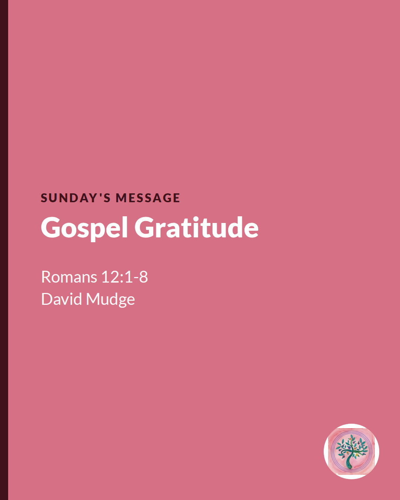
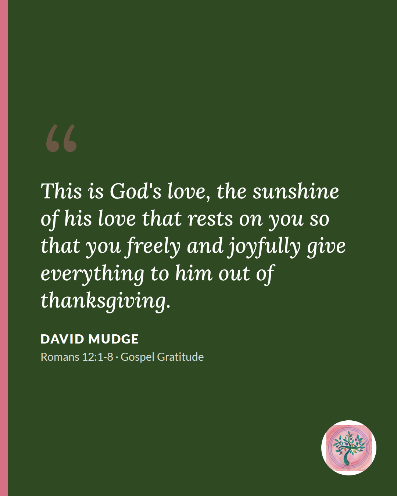
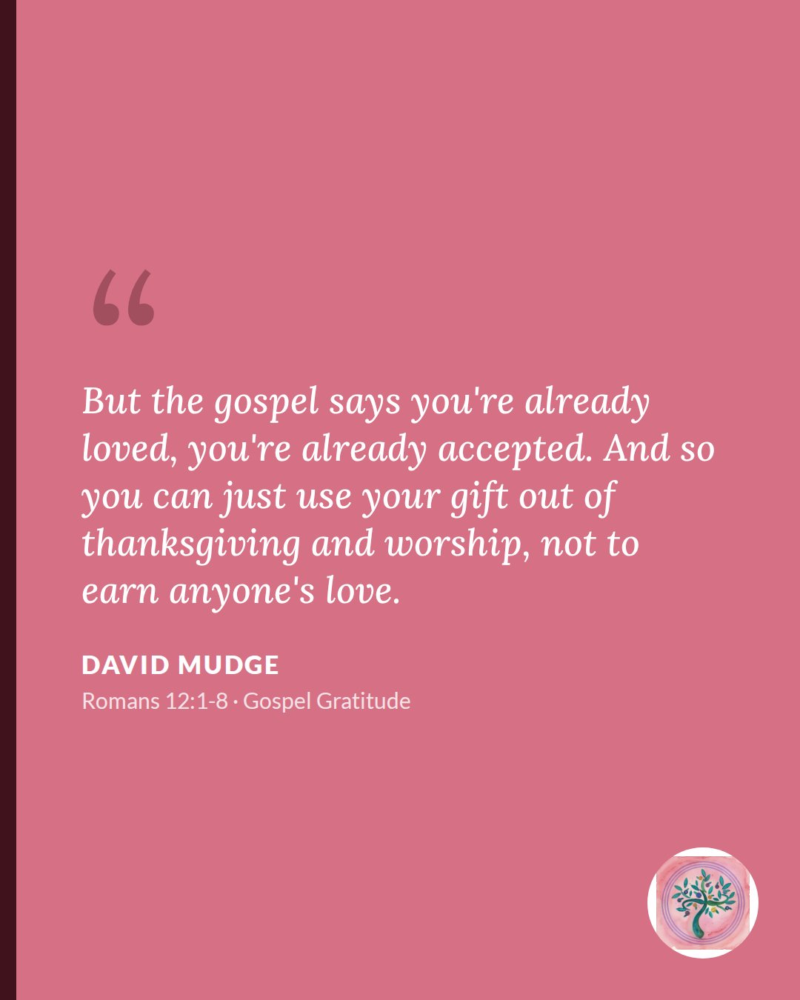
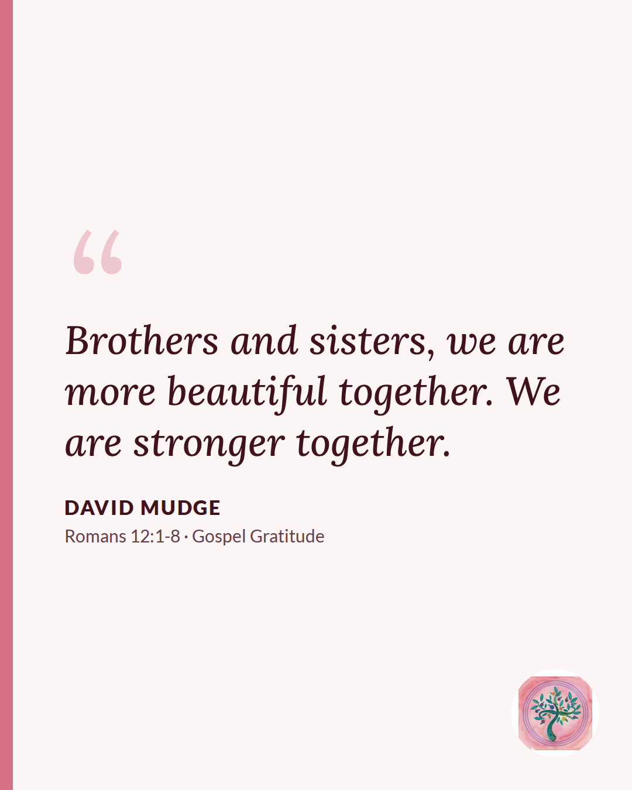
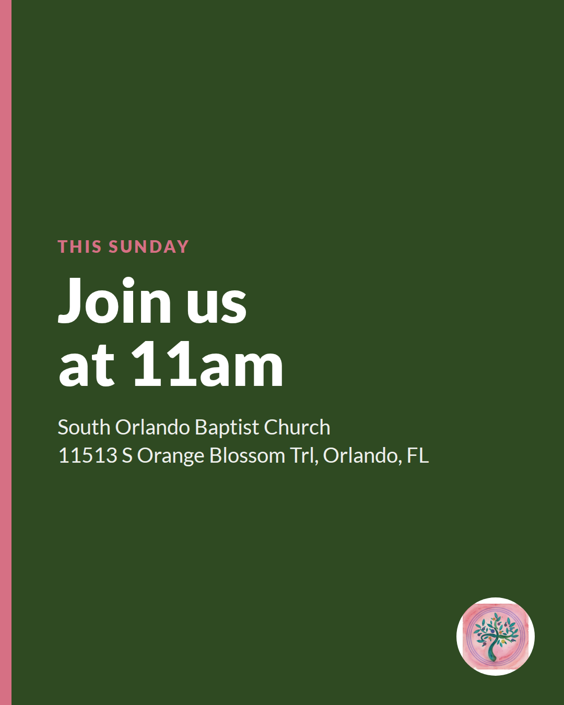

Everything here was made from one thing: the sermon you already posted. 7 graphics and 3 short video clips, with captions, scheduled across the week. Every quote is your preacher's own words, checked against the sermon.
Your week
Mon Nov 30
· 09:00Sermon recap

This past Sunday we were blessed to have Pastor David Mudge as our guest preacher, taking us through Romans 12:1-8 in a message called "Gospel Gratitude." With Thanksgiving week upon us, it was a fitting reminder of why we give thanks.
After eleven chapters of Paul laying out the mercies of God, the forgiveness, freedom, and love we have in Christ, Romans 12 begins with an appeal. We are invited to give ourselves as a living sacrifice, a sacrifice of thanksgiving. This is not a bargain with God or a weight to carry. It is the joyful response of a child who has been loved, like the sunshine that warms a man until he freely takes off his jacket.
From there we saw two applications. First, renew your mind to know God's will. We are not to be pressed into the world's mold, and our hearts are changed as we worship, pray, read Scripture, and thank God each day. Second, receive your role in the body of Christ. God has given each of us gifts, and we serve not to earn love but because we are already loved.
If you missed Sunday, we would love for you to watch the message. This week, take a moment to thank God for His mercies, and then ask how you might serve your church family.
Mon Nov 30
· 18:00Main points

This week's message from Romans 12:1-8, "Gospel Gratitude." Because of the mercies of God, we give ourselves as a sacrifice of thanksgiving. Then we renew our minds to know God's will, and we receive our role in the body of Christ. Which of these three do you most need to hear today? Join us this Sunday, or watch the full message on our page.
#SermonRecap #Romans12 #GospelGratitude #SouthOrlandoBaptist
Tue Dec 1
· 09:00Quote graphic

God's love is like sunshine. It doesn't force us. It warms us until we freely and gladly respond. This Thanksgiving week, we're reminded that our gratitude to Him rises out of His mercies toward us in Christ. Romans 12:1 calls us to give ourselves as a sacrifice of thanksgiving. 🙏 What is one mercy of God you want to thank Him for today?
#GospelGratitude #Romans12 #Thanksgiving #SouthOrlandoBaptist
Tue Dec 1
· 18:00Video clip (Reel)
Why do we give our lives to God in thanksgiving? Not because we are forced, but because we are loved. Hear this picture of the north wind and the sun, and how the warmth of God's love draws a joyful response from His people. From Romans 12:1, "Gospel Gratitude."
Wed Dec 2
· 09:00Quote graphic

We don't come to God with a ledger of what we've done. We come as beggars, and He receives us as sons and daughters. That's the good news at the center of Romans, and it's why our thanksgiving can be joyful and free. 🤍 Take a quiet moment this week to thank Him for adopting you into His family.
#Gospel #Romans12 #Grace #SouthOrlandoBaptist
Wed Dec 2
· 18:00Video clip (Reel)
The gospel is not a bargain. We come to God as beggars, and He loves us as His children. What we give back is like a child joyfully handing their father a flower. A short reminder from Romans 12 of what gratitude to God really looks like.
Thu Dec 3
· 09:00Quote graphic

We serve because we are already loved, not to earn love. Paul tells us that God has given each believer gifts for the good of the body. When we use them out of gratitude, serving becomes worship. 🌱 Is there a place in our church family where you could take a small step to plug in and serve this month?
#SpiritualGifts #BodyOfChrist #Romans12 #SouthOrlandoBaptist
Thu Dec 3
· 18:00Video clip (Reel)
Spiritual gifts are a sign that Christ reigns. He gives them for the spread of the gospel and the good of His people, and there is joy in using them. When you serve others, do you not feel God's pleasure? A reflection from Romans 12:6.
Fri Dec 4
· 09:00Quote graphic

God did not make us all the same, and that is by design. In Romans 12, Paul says we are many members in one body, each needed and each valued. We are more beautiful and stronger together. Who in our church family has encouraged you by using their gifts? Take a moment to thank them this week.
#Church #OneBody #Romans12 #SouthOrlandoBaptist
Sat Dec 5
· 10:00Sunday invite

We'd love to worship with you this Sunday at 11am! South Orlando Baptist Church, 11513 S Orange Blossom Trl, Orlando, FL. There's a seat for you. 🧡
Want this every week?
Keep posting your sermon to YouTube. We make and post the rest to your Instagram and Facebook, or send it to you to approve first. $79/month, cancel anytime.
See plans and subscribe
Questions? Reply to the email this came in, or write to joelspulpittopost@gmail.com